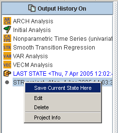
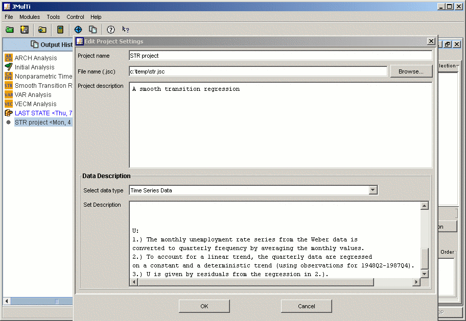

Project ManagementDescription
Project management in JMulTi makes it possible to store
data, output, and the model settings for each module in
a single file. This way it is possible to restore the
state of an analysis conveniently. JMulTi project files
are in an XML format with the suffix Open and SaveAfter a project has been loaded, it appears in the explorer panel tagged with the symbol. To open a project there are different possibilities:
To save the current state of the analysis to a project file, the SAVE AS button should be used. A configure dialog will appear. It is also possible to save the analysis to an already existing project with its RIGHT mouse popup and the SAVE CURRENT STATE HERE option.  Configuring ProjectsThe project configuration dialog appears when the SAVE AS button is pressed or when the EDIT item is selected from a projects RIGHT mouse popup. Adjustable settings:
 Managing projectsAll recently opened projects appear in the explorer bar. This should make it very easy to switch between different analyses. Elements from this list can be deleted by selecting them and pressing the DEL button or by using the RIGHT mouse popup menu. New projects can be put to the list and are instantly loaded via drag and drop. |